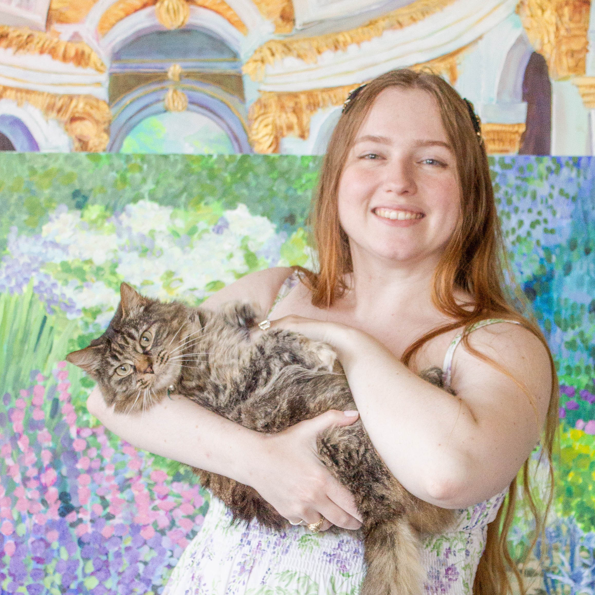

About the Artist

Based in Houston, Texas, Faith Leskowitz is a fine artist specializing in expressive floral, landscape, and portrait acrylic paintings. Drawing inspiration from botanical gardens, vibrant colors, and natural light, her work blends impressionistic brushwork with a soft, layered palette.